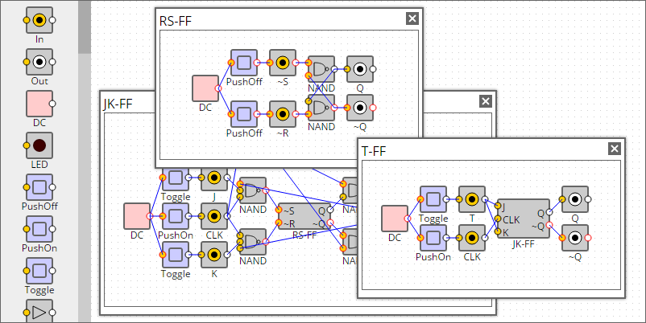

home

SimcirJS
Download
SimcirJS(a.k.a. Simcir) is a circuit simulator in HTML5 and JavaScript.
Usage
- Choose a device from the toolbox and move to right side.
- Connect them by drag operation.
- Click an input node to disconnect.
- Move a device back to the toolbox if you don't use.
- Ctrl+Click(Mac:command+Click) to toggle view (Live circuit or JSON data).
- Double-Click a label to edit device name.
- Double-Click a library to open the circuit inside.
{
"width":800,
"height":400,
"toolbox":[
{"type":"In"},
{"type":"Out"},
{"type":"DC"},
{"type":"LED"},
{"type":"PushOff"},
{"type":"PushOn"},
{"type":"Toggle"},
{"type":"BUF"},
{"type":"NOT"},
{"type":"AND"},
{"type":"NAND"},
{"type":"OR"},
{"type":"NOR"},
{"type":"EOR"},
{"type":"ENOR"},
{"type":"OSC"},
{"type":"7seg"},
{"type":"16seg"},
{"type":"4bit7seg"},
{"type":"RotaryEncoder"},
{"type":"BusIn"},
{"type":"BusOut"},
{"type":"RS-FF"},
{"type":"JK-FF"},
{"type":"T-FF"},
{"type":"8bitCounter"}
]
}
Embed your circuit
Ctrl+Click(Mac:command+Click) on your circuit and copy circuit data.
Then paste your circuit into template below.
<!doctype html>
<html>
<head>
<meta http-equiv="Content-Type" content="text/html;charset=UTF-8" />
<script type="text/javascript" src="jquery-2.1.1.js"></script>
<script type="text/javascript" src="simcir.js"></script>
<link rel="stylesheet" type="text/css" href="simcir.css" />
<script type="text/javascript" src="simcir-basicset.js"></script>
<link rel="stylesheet" type="text/css" href="simcir-basicset.css" />
<script type="text/javascript" src="simcir-library.js"></script>
<title></title>
</head>
<body>
<div class="simcir">
<!-- paste here your circuit data -->
</div>
</body>
</html>
Reuse a circuit
To reuse a circuit as library, use device 'In' and 'Out'.
{
"width":500,
"height":200,
"showToolbox":true,
"toolbox":[
{"type":"In"},
{"type":"Out"},
{"type":"DC"},
{"type":"PushOff"},
{"type":"PushOn"},
{"type":"Toggle"},
{"type":"NAND"}
],
"devices":[
{"type":"In","id":"dev0","x":176,"y":112,"label":"~R"},
{"type":"NAND","id":"dev1","x":224,"y":56,"label":"NAND"},
{"type":"Out","id":"dev2","x":272,"y":56,"label":"Q"},
{"type":"Out","id":"dev3","x":272,"y":104,"label":"~Q"},
{"type":"DC","id":"dev4","x":64,"y":80,"label":"DC"},
{"type":"PushOff","id":"dev5","x":120,"y":48,"label":"PushOff"},
{"type":"PushOff","id":"dev6","x":120,"y":112,"label":"PushOff"},
{"type":"In","id":"dev7","x":176,"y":48,"label":"~S"},
{"type":"NAND","id":"dev8","x":224,"y":104,"label":"NAND"}
],
"connectors":[
{"from":"dev0.in0","to":"dev6.out0"},
{"from":"dev1.in0","to":"dev7.out0"},
{"from":"dev1.in1","to":"dev8.out0"},
{"from":"dev2.in0","to":"dev1.out0"},
{"from":"dev3.in0","to":"dev8.out0"},
{"from":"dev5.in0","to":"dev4.out0"},
{"from":"dev6.in0","to":"dev4.out0"},
{"from":"dev7.in0","to":"dev5.out0"},
{"from":"dev8.in0","to":"dev1.out0"},
{"from":"dev8.in1","to":"dev0.out0"}
]
}
Then register it in JavaScript and add to the toolbox in HTML.
simcir.registerDevice('MyDevice',
// paste here your circuit data
);
<div class="simcir">
⋮
"toolbox":[
{"type":"DC"},
{"type":"PushOff"},
⋮
{"type":"MyDevice"}
],
⋮
</div>
In this case, a new device 'RS-FF' is added.
{
"width":500,
"height":200,
"showToolbox":true,
"toolbox":[
{"type":"DC"},
{"type":"PushOff"},
{"type":"RS-FF"}
],
"devices":[
{"type":"DC","id":"dev0","x":104,"y":80,"label":"DC"},
{"type":"RS-FF","id":"dev1","x":208,"y":80,"label":"RS-FF"},
{"type":"PushOff","id":"dev2","x":160,"y":112,"label":"PushOff"},
{"type":"PushOff","id":"dev3","x":160,"y":48,"label":"PushOff"}
],
"connectors":[
{"from":"dev1.in0","to":"dev3.out0"},
{"from":"dev1.in1","to":"dev2.out0"},
{"from":"dev2.in0","to":"dev0.out0"},
{"from":"dev3.in0","to":"dev0.out0"}
]
}
Customize a device
{
"width":500,
"height":200,
"showToolbox":true,
"toolbox":[
{"type":"DC"},
{"type":"Toggle"},
{"type":"LED","color":"#00ff00","label":"LED(G)"},
{"type":"NAND","numInputs":"3","label":"NAND(3in)"}
],
"devices":[
{"type":"NAND","numInputs":"3","label":"NAND(3in)","id":"dev0","x":200,"y":80},
{"type":"Toggle","id":"dev1","x":144,"y":32,"label":"Toggle"},
{"type":"Toggle","id":"dev2","x":144,"y":80,"label":"Toggle"},
{"type":"Toggle","id":"dev3","x":144,"y":128,"label":"Toggle"},
{"type":"DC","id":"dev4","x":88,"y":80,"label":"DC"},
{"type":"LED","color":"#00ff00","label":"LED(G)","id":"dev5","x":256,"y":80}
],
"connectors":[
{"from":"dev0.in0","to":"dev1.out0"},
{"from":"dev0.in1","to":"dev2.out0"},
{"from":"dev0.in2","to":"dev3.out0"},
{"from":"dev1.in0","to":"dev4.out0"},
{"from":"dev2.in0","to":"dev4.out0"},
{"from":"dev3.in0","to":"dev4.out0"},
{"from":"dev5.in0","to":"dev0.out0"}
]
}
Contents Copyright © Kazuhiko Arase